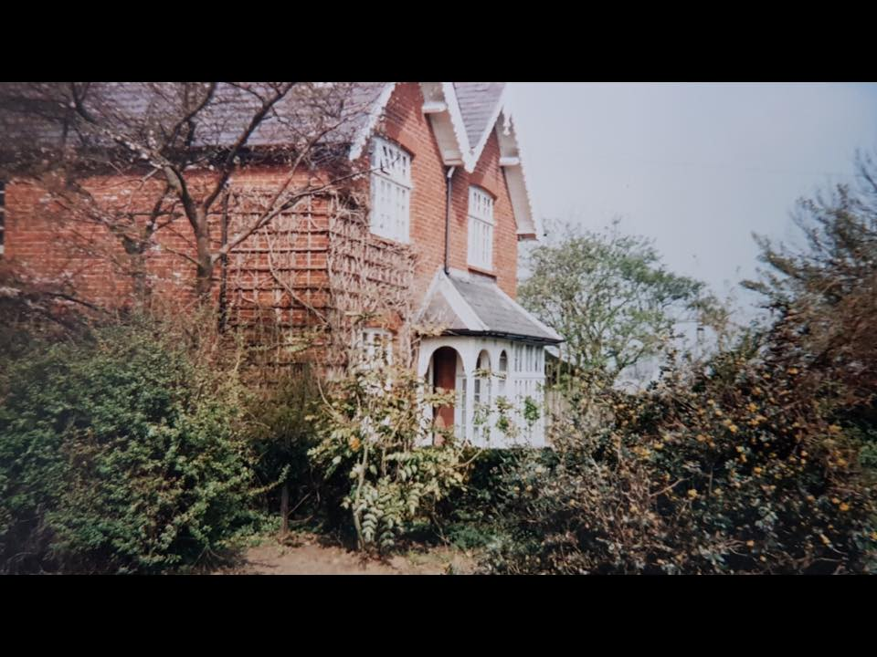

Seears Park
all about this community space

Once a cornfield, Seears Park was "bequeathed in perpetuity to the people of the borough" by Mr and Mrs John Seears, who lived nearby in Quarry Park Rise. Seears Park opened formally as a park in 1934. This plinth is made of Portland Stone and was originally topped by a drinking fountain with a statue of a boy, and bore an inscription thanking the Seears for their generous gift of the park. Over the years, the top parts disappeared or were removed, leaving only the plinth still standing.

xxxxxx